Редукція — ЦЕ Відновлення здоров’я через правильний рух
- Кваліфіковані спеціалісти
- Багаторічний досвід
- Без хірургії та медикаментів
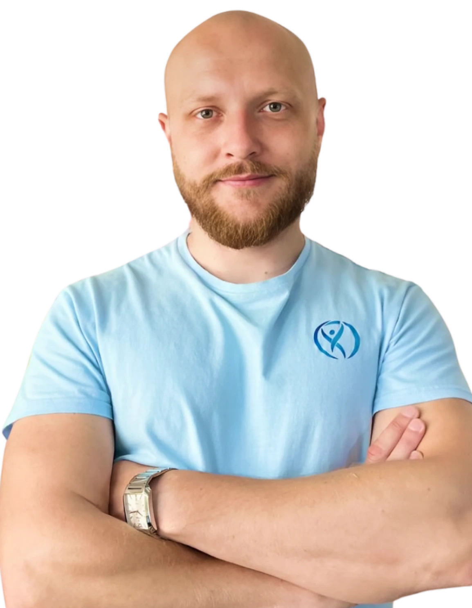
З якими проблемами ми працюємо?
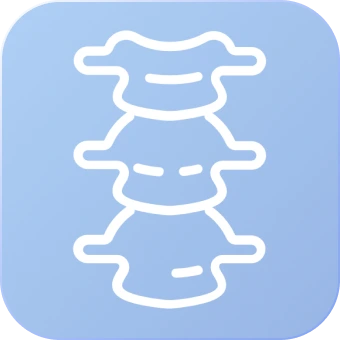
Лікування
остеохондрозу та
артрозів
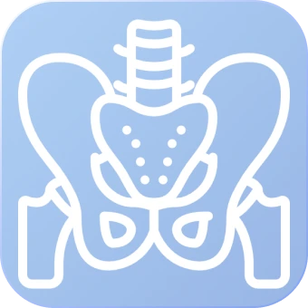
Виправлення
постави та
перекосу тазу
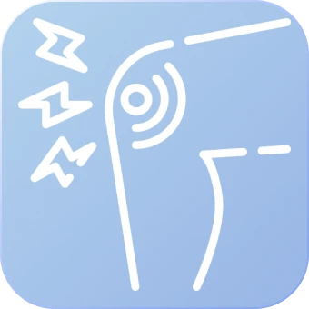
Прибираємо
біль в спині та
суглобах
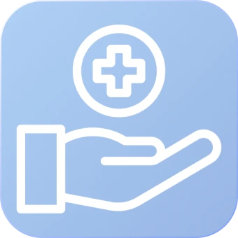
Покращення
загального
самопочуття
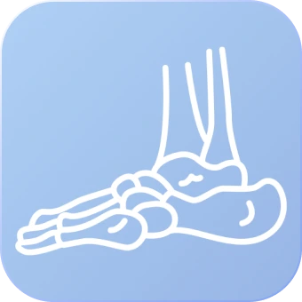
Лікування плоскої
стопи
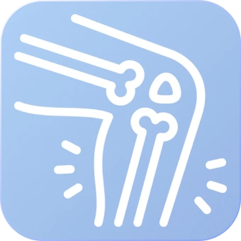
Реабілітація після
травм і операцій
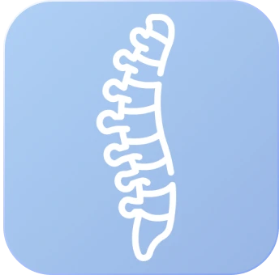
Лікування гриж і
протрузій
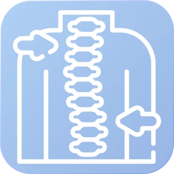
Виправлення
сколіозу
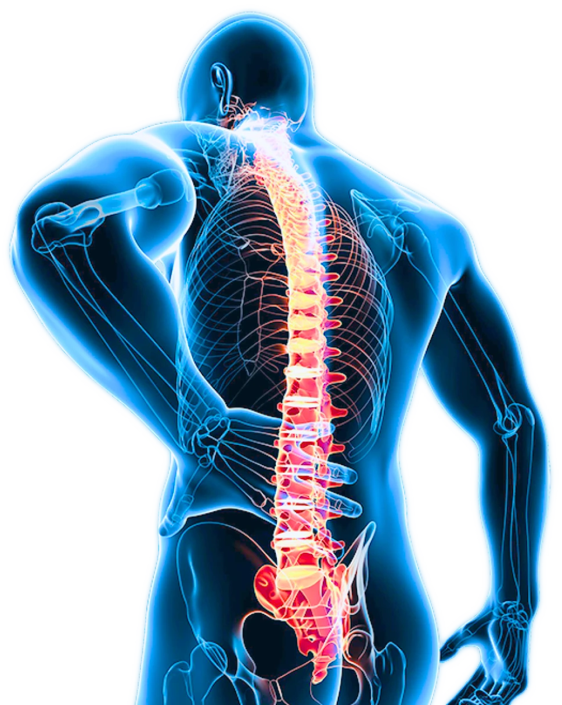
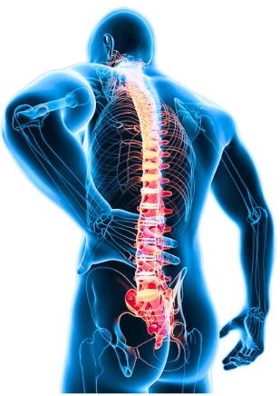
досить терпіти біль
Переваги нашої студії кінезітерапії
Досвідчені фахівці з індивідуальним підходом
Наші спеціалісти мають понад 7 років досвіду роботи у сфері реабілітації та відновлення. Кожна програма розробляється індивідуально, враховуючи ваші особливості, діагноз і фізичний стан, щоб забезпечити максимальну ефективність.
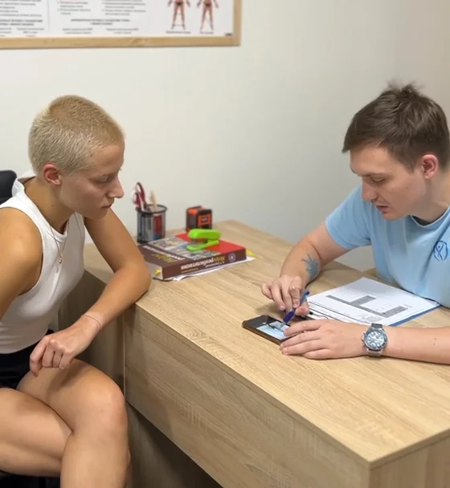
Сучасне обладнання та методики
Ми використовуємо спеціалізовані тренажери, які допомагають ефективно працювати з м'язами та суглобами навіть у складних випадках. Методика кінезітерапії базується на сучасних наукових розробках і довела свою ефективність у відновленні опорно-рухового апарату.
Довготривалі результати, мінімізація рецидівів
Ми працюємо над усуненням причини захворювання, а не лише знімаємо симптоми. Завдяки зміцненню глибоких м'язів ви отримуєте стабільний та довготривалий результат.
Комплексна діагностика та супровід
Перед початком занять ми проводимо детальний огляд, вивчаємо історію хвороби, аналізуємо результати обстежень і тестуємо ваш фізичний стан. Кожен етап вашої реабілітації контролюється реабілітологом, який адаптує програму при необхідності.
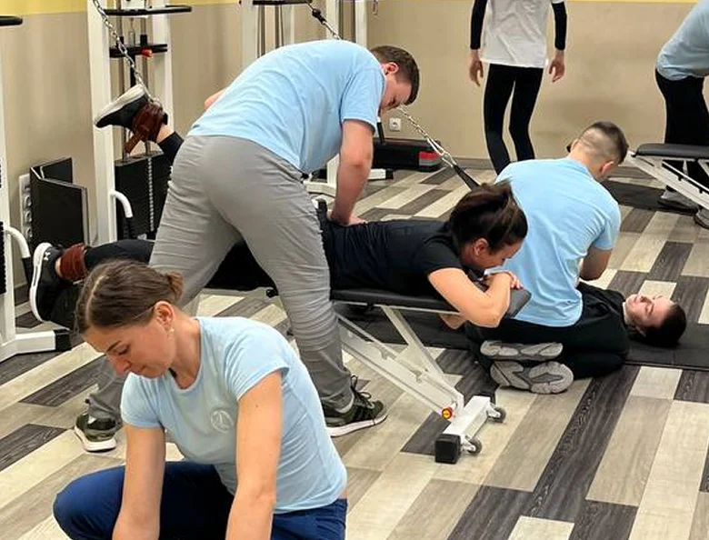
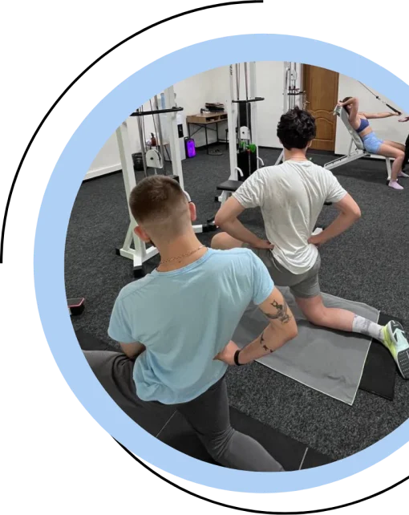
результати пацієнтів
наша гордість та підтвердження кваліфікації спеціалістів центру
- остеохондроз
- грижі/протрузії
- сколіоз
- реабілітація після травм
Чому стандартні методи не працюють?
- Мануальна терапія: короткочасний ефект
- Таблетки: знімають симптоми, а не причину
- Операції: довгий процес відновлення та великий ризик рецидивів
- Ортопедія: корсети тільки маскують проблему
Кінезітерапія вирішує проблему, а не приховує її!
Доситьте терпіти біль і відкладати дієве лікування. Зробіть перший крок назустріз одужанню.
Записатися на консультаціюзасновник центру РЕДУКЦІЯ
ЯРОСЛАВ МАЛІНОВСЬКИЙ
20+
курсів підвищення кваліфікаціх
- спеціаліст з кінезітейпування
- візуальна діагностика постави
- мануально м’язове тестування
викладач курсів оздоровчого
масажу 2020-2021
9 років
практичного досвіду
як фізіотерапевт
5000
задоволених клієнтів
яким вдалося відновити своє здоров’я за допомогою центру “Редукція”
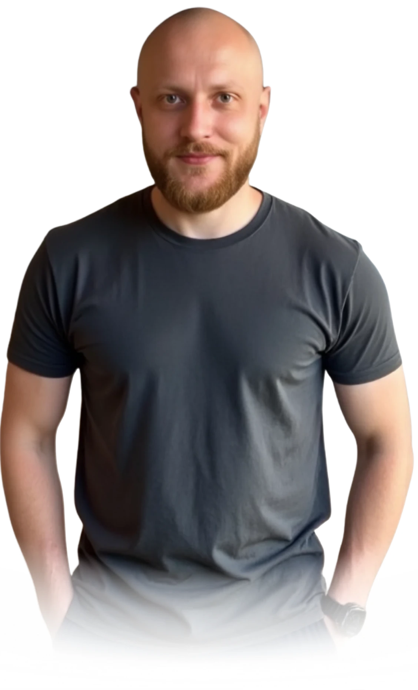
більше 5000 клієнтів вже довірились нам
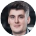
Олександр
Місце яке покликано у першу чергу допомогти людині, а вже у другу - заробити. Команда професіоналів яка зацікавлена у ваших результатах. За рік я пропустив лише кілька тренувань, відкладав усе, тільки не треню. Я займався у різних залах, кінезіо центрах, але від підходу Редукції та усієї команди я просто у захваті. Особлива подяка тренеру Стасу, людині яка не знає втоми і кожен раз викладається на повну. Бажаю процвітання Редукції і кожному її рекомендую як для профілактики так і для лікування опорно-рухового апарату.
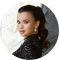
Катерина
Прийшла в центр, маючи перекос, болі в спині та важкість при ходьбі. Подобається, що на тренуваннях працюємо комплексно на все тіло. Вправи здаються звичайними, на початку я не розуміла чим вони можуть бути ефективні. Але полегшення відчула вже після декількох тренувань. На другому огляді вже побачила хороший результат, самопочуття також вже краще) Взагалі дуже подобається атмосфера в центрі, з усіма легко знайти контакт, чудові спеціалісти. Особлива вдячність Денису, все доступно пояснює, тренування проходять максимально комфортно та весело, що для мене важливо. Кожне наступне тренування чекаю з нетерпінням!
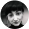
Юлія
Займалася в Редукції три місяці, і прийду ще обовʼязково!!! Лікар мене відправляв на хірургічний стіл, так як маю дві грижі, але дякувати Богу я потрапила в Редукцію. Після перших занять мені вже стало набагато краще, потім через 5 занять я забула що таке болі в спині взагалі, і зараз не знаю що це! Особливо дякую реабілітологу Максиму! Він дуже уважний, завжди запитає як самопочуття, де болить... як болить... і на масажі завжди виправляє ситуації, і якщо десь і боліло то після масажу не болить. Бракує слів описати мій захват від Редукції. Я обовʼязково повернуся!!!
Аліна
100% рекомендую, займаюся вже півроку. Прийшла з болем у коліні та спині, майже одразу відчула покращення. Займалася з Максимом. Здорово, що є повний контроль над вправами, і немає варіанта зробити щось неправильно)) Всі хлопці дуже привітні, товариські, з усіма дуже комфортно. Кілька разів на місяць були огляди та зміна вправ. Ну і масаж після заняття найчарівніша частина.
Анна
Редукція - це моя любов і щира рекомендація! За 3 місяці мені вилікували і вирівняли спину, а реабілітаційний центр став рідною домівкою)) Окреме дякую Дмитру, для мене це найкращий спеціаліст, який має свої методики і підхід, кваліфікований реабілітолог, який зліпив з мене здорову людину. Тому, кому потрібна здорова спина, гарна попа і свіжа голова вам точно сюди)
Богдан
Затишно та професійно. Чудові професіонали з великим досвідом. Звернувся з болями в спині та коліні, роками то таблетки, то мазі. Знайшли причину нарешті та працюємо над усуненням. І результатом дуже задоволений. Реабілітолог Стас уважний та націлений на результат, дякую. Але запевняю - там усі професіонали:)
вартість занять:
Для гостей наших студій доступні різні види абонементів для ефективного досягнення результатів та швидкого отримання полегшення.
Кінезітерапія
- 1 Заняття 700 грн
- Абонемент 12 занять (40 днів) 6 000 грн
- Абонемент 36 занять (120 днів) 17 000 грн
Кінезітерапія + масаж
- 1 Заняття 800 грн
- Абонемент 12 занять (40 днів) 7 200 грн
- Абонемент 36 занять (120 днів) 20 200 грн
Кінезітерапія + перкусійний масаж
- 1 Заняття 830 грн
- Абонемент 12 занять (40 днів) 7 300 грн
- Абонемент 36 занять (120 днів) 20 500 грн
Сімейний курс Кінезітерапія + масаж
- Абонемент 24 занять (40 днів) 13 900 грн (2 людини)
- Абонемент 36 занять (120 днів) 20 200 грн (3 людини)
Інші послуги
- Банки 200 грн
- Перкусійний масаж 250 грн
- Кінезітейпування 300 грн
запишіться на первинну діагностику
Отримайте консультацію з подальшим планом відновлення та відвідайте пробне тренування за
499 грн
замість
800 грн
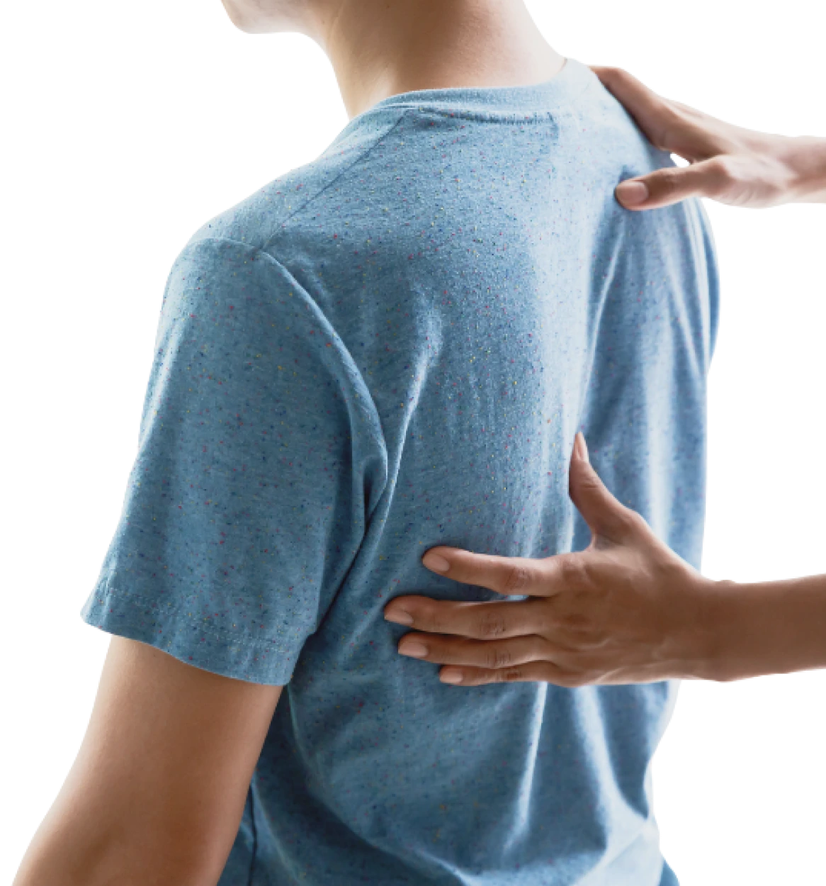